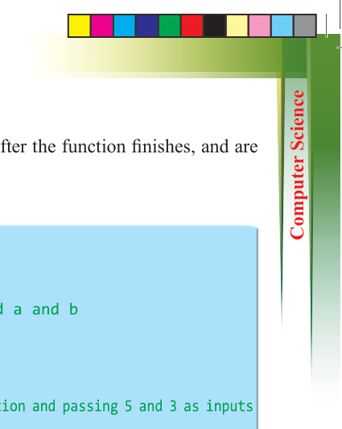
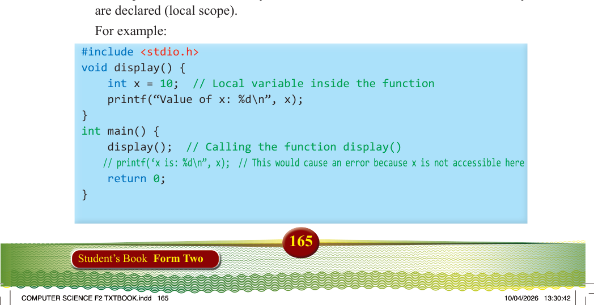

165
Student’s Book Form Two
function. They are temporary and disappear after the function finishes, and are used to perform tasks within the function.
For example:
#include <stdio.h>
// Function has two inputs (a and b) void add(int a, int b) { int sum = a + b; // This code add a and b printf("Sum: %d\n", sum);
} int main() {
add(5, 3);//This code is calling the function and passing 5 and 3 as inputs
return 0;
}
Output:
Sum: 8
Referring to this example:
1. int a and int b are inputs to the function add();
2. When we call add(5, 3);, the number 5 goes to a, and the number 3 goes to b;
3. Inside the function, a and b are used to calculate the sum. After the function finishes, a and b are no longer available.
(iii) Local variables (inside a function or block)
In this place, variables can only be used within the function or block where they are declared (local scope).
For example:
#include <stdio.h> void display() { int x = 10; // Local variable inside the function printf(“Value of x: %d\n”, x);
} int main() { display(); // Calling the function display()
// printf(‘x is: %d\n”, x); // This would cause an error because x is not accessible here return 0;
}